* Broadband Internet access required for all online features. For more information, go to
support.nintendo.com
Wii Shop
Channel
Your online* experience with the Wii console begins here. You'll find a huge selection of new and classic games downloadable at a great value, and exciting Wii Channels.
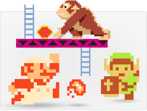
Download hundreds of all-time classic games from the Virtual Console service.
LEARN MORE >

Discover new & unique downloadable games from the WiiWare service.
LEARN MORE >
Enhance your Wii experience with extra channels, available at no cost.
Amazon Instant Video
Amazon Instant Video has more than 150,000 titles, including new release movies and in-season TV episodes to rent or purchase. Purchased movies and TV episodes appear in Your Video Library, to enjoy anytime. In addition, Amazon Prime members can watch thousands of videos at no additional cost to their membership. If you have never tried Amazon Prime before, you can start a 30-Day Free Trial at
www.amazon.com/primevideo.
REGISTER YOUR Wii WITH AMAZON INSTANT VIDEO
SIGN UP FOR AMAZON PRIME

YouTube
Download the free YouTube application for Wii to watch your favorite videos right on your TV. Discover shows from channels like Disney, official music videos, and the latest trending videos. Sign in to your YouTube account to get caught up on all your subscriptions and watch your saved playlists.
You can download this application for FREE from the Wii Shop Channel.
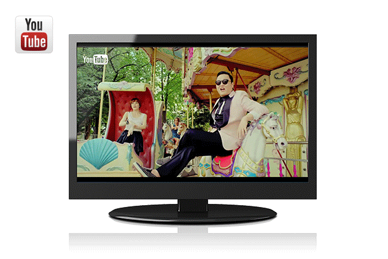
Hulu
Plus™
Hulu Plus™ oon Wii offers hit TV shows and award-winning movies anytime, right from your Wii console*. Instantly stream any current season episode from a range of top network TV shows like Glee, The Office, Modern Family and Gossip Girl. Catch up on classic TV series, or explore hundreds of acclaimed movies from Miramax and The Criterion Collection—plus more.
SIGN UP FOR HULU PLUS
All you need is a Hulu Plus subscription - $7.99/month with limited advertising. Cancel anytime. If you don’t already have a Hulu Plus account, sign-up via your Wii console to get a one week free trial.
You can download this application for FREE from the Wii Shop Channel.
GET HULU PLUS ON YOUR Wii
NEED HELP WITH HULU PLUS
Your browser does not support the video tag
Netflix
Did you know that you can stream TV shows and movies right to your Wii console*? Thanks to Netflix, it's easy and incredibly affordable. All you need is a Netflix unlimited membership, and you can watch as much as you want-whenever you want.
You can download this application for FREE from the Wii Shop Channel.
SIGN UP FOR NETFLIXGET NETFLIX ON YOUR Wii
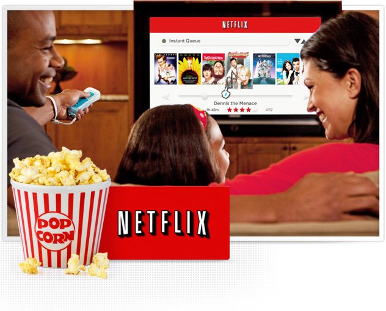
Mii
Channel
One of the best things about the Wii system is creating Mii™ characters, adorable avatars that you can customize to resemble you, your friends, or family.
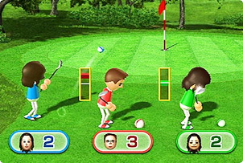
These Mii characters can then be used to play specially designed games like
Wii Sports,
Wii Fit Plus, and more—putting you right into the game!

Customize eyes, ears, nose, height, and other features to craft a Mii in your image.
Save dozens of Mii characters on your Wii, one for each friend & family member. Use Mii characters in the
Check Mii Out Channel,
Everybody Votes Channel, and more.
Nintendo
Channel
Fire up the Nintendo Channel for an exciting guide to what's new in the world of Nintendo*. Watch gameplay videos, trailers, developer interviews, and much more. With a huge online library of content, it's easier than ever to find up-to-date info on all things Nintendo.
You can download this channel for FREE from the Wii Shop Channel.
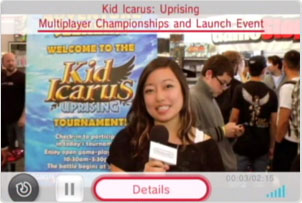
Watch event coverages, game trailers and much more.
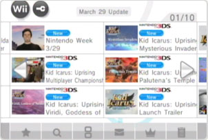
Search for info on tons of Wii and Nintendo DS games—and see how others rate them.
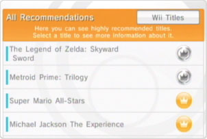
Share your thoughts on games you've played, and recommend them to the Wii community.
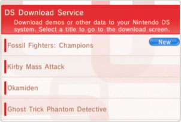
Download demos of recent & upcoming Nintendo DS games via DS Download Play.
Internet
Channel
Now everyone in your family can browse the Internet with ease*. A simple point of the Wii Remote Plus™ controller brings email, news, and online video right to your living room. Plus-sized navigation buttons and a handy zoom feature makes viewing websites a breeze—without even leaving your couch.
You can download this channel for FREE from the Wii Shop Channel.
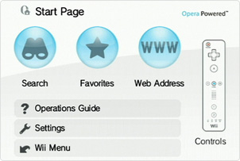
The Start Page makes web searches and bookmarks easy to access from the get-go.
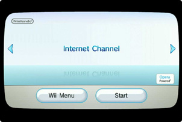
Access everything with your Wii Remote thanks to an optimized browsing experience.
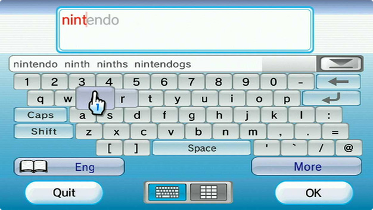
Type with ease using an onscreen keyboard with predictive typing.
Check Mii Out
Channel
The Check Mii Out Channel is the place for Mii™ characters to mingle in fun and outrageous ways! With Wii users from around the world joining in on the fun, there's something new to see every time you visit*.
You can download this channel for FREE from the Wii Shop Channel.
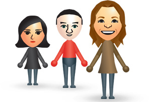
Show off your Mii creations, and enter regional and worldwide Mii contests.
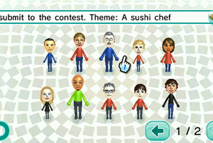
Be the judge, and vote for your favorites in any contest in your region.
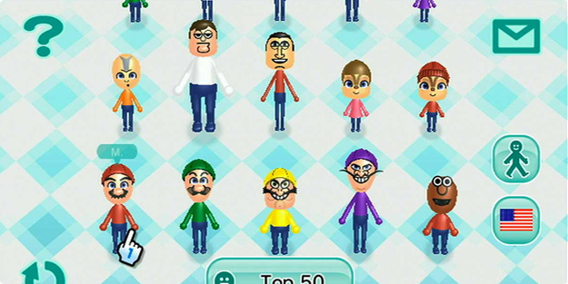
Browse a huge number of Mii characters in a variety of fun categories. Download Mii characters created by others to use on your own Wii console.
Everybody Votes
Channel
This unique channel brings you all kinds of national and worldwide polls that will get the whole family talking*. Just make your choice, and check back to see the results. You can even predict what will get the most votes and see how your choice stacks up. But get ready to be surprised by the answers!
You can download this channel for FREE from the Wii Shop Channel.
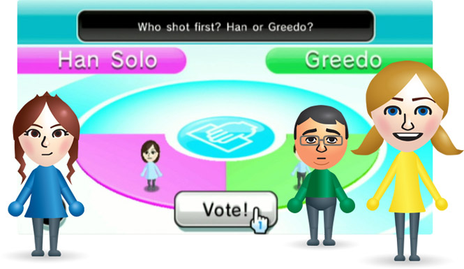
News
Channel
Get a quick look at the latest news stories from around the world with the News Channel. Articles are updated from across the Internet every time you visit*, and you can quickly and easily choose a country using the interactive on-screen globe to find news in the region you're most interested in.
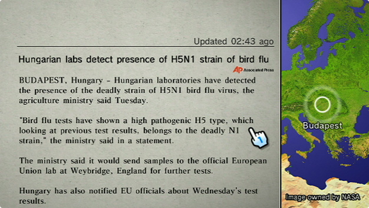
Forecast
Channel
When it comes to the weather, Wii is your window to the world. With the Forecast Channel, weather information is automatically updated from all over the globe*. So whether you want to know the weather in Washington or Warsaw, Wii is the one to ask.
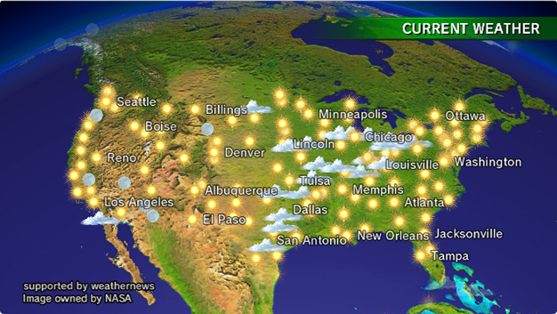
Photo
Channel
Have some photos or videos on an SD card? The Photo Channel lets you display your digital images and movies on your TV screen. Zoom in or out on the photo, add fun visual effects and digital paint brushes, or watch them in a slideshow. You can even put music on an SD card as MP3 files to play with your slideshow.
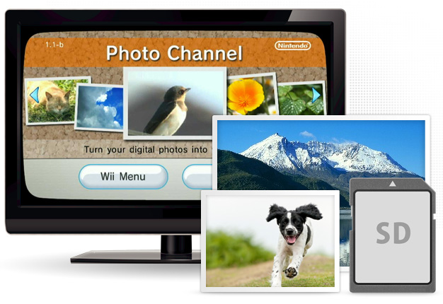